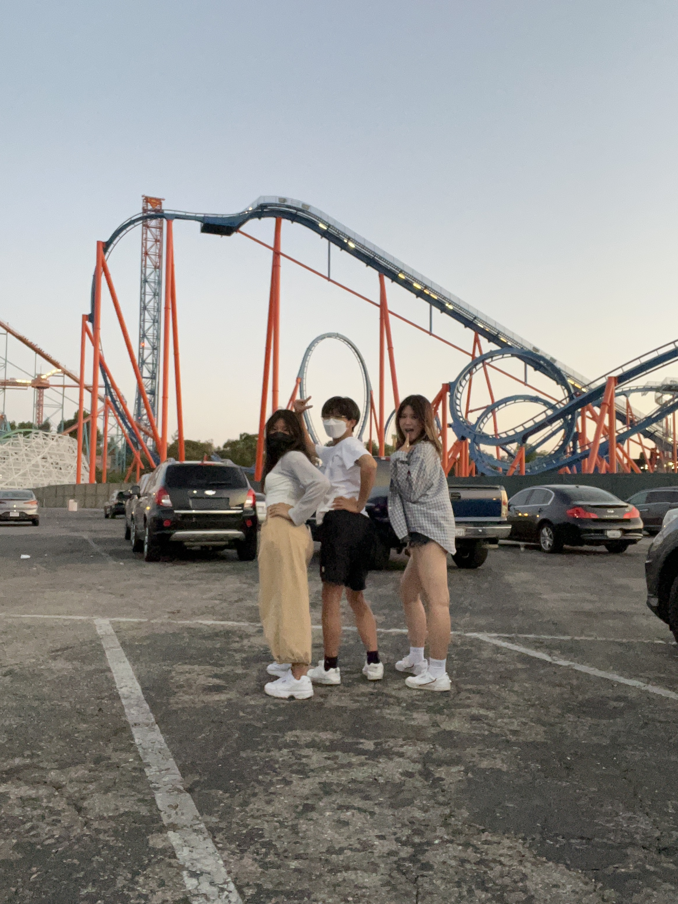
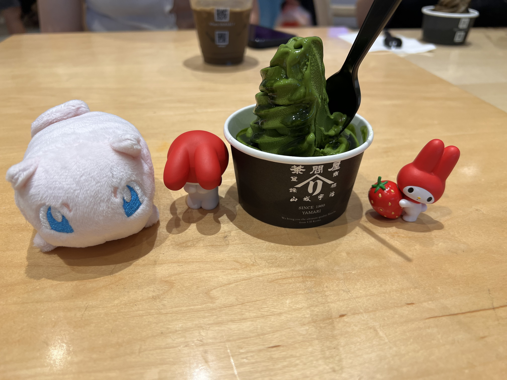

☾⋆｡𖦹 °✩𖦹⭑ | st★rg!rl
Beaches at Sunset

Six Flags

This is me and my siblings at Six Flags. I always get a season pass. I go whenever I have the free time. I never go on the weekends because I hate places that are overcrowded. My favorite rides are X2, Crazanity, Apocalypse, Twisted Colossus, and Full Throttle.I like the feeling of hanging upside down. Defying gravity makes me feel so free.
Korea

Korea is such a fun country to travel. Evertyhing is so cheap, aesthetically pleasing, fast paced, beautiful, and offer so many cool things to experience. When I boarded my return flight the post-Korea depression really hit hard. I hope to go back again soon!
Tokyo Central/ Japanese Home Store
I love going to Japanese stores! They have such unique snacks and food to try out, cute figurines, cool cosmetic products, and many more. This is me taking a picture of the figurines I got at a Japanese store. No matter how many times I go, I never get bored!
Concerts
I love going to concerts. Listening to a live concert hits so much differently than listening through headphones. I went to a lot of concerts. I went to concerts for Emotional Oranges, La Primavera Sound, Keshi, Feng Suave, CAS(Cigarettes After Sex), Kcon, Cafune, Benee, and many more! The concert I enjoyed the most is Kcon because I get to see many artists in one day. Also, their songs are so fun so it makes the experience even better and livelier!Heres a video of Girl in Red when they performed at La Primavera Sound. I was so shocked at how good their performance was!